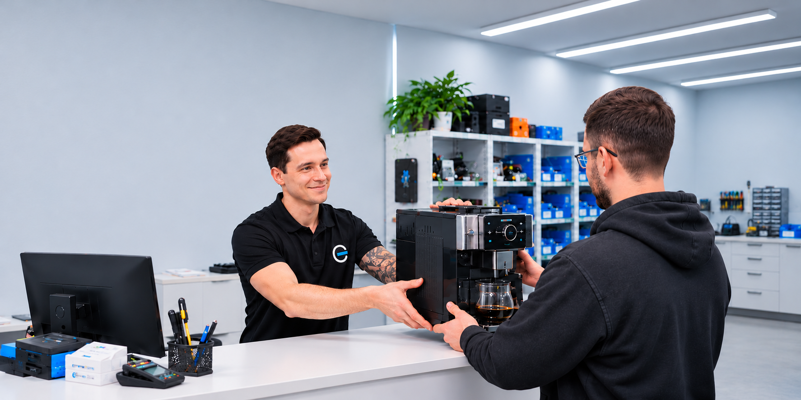

Оставьте заявку
Наш менеджер свяжется с Вами и проведёт бесплатную консультацию по стоимости и срокам

Мы работаем уже в 3-х городах, в нашей сети 5 сервисных центров и более 50 сотрудников с общим опытом более 100 лет!
Наш менеджер свяжется с Вами и проведёт бесплатную консультацию по стоимости и срокам
К Вам приедет наш мастер или курьер, также можете привезти Вашу технику к нам в сервис самостоятельно
После диагностики согласовываем с Вами стоимость ремонта. Производим ремонт техники, проверяем и выдаём гарантию на проведенные работы
Сеть сервисных центров «Сервисник» — это более 7 лет честной работы, развития и положительных эмоций наших клиентов. Мы вернули к жизни более 15 000 приборов и миллионы сохраненных денег на незапланированные покупки.
ПодробнееПосмотрите короткое видео о наших сервисных центрах и узнайте наших профессионалов в лицо